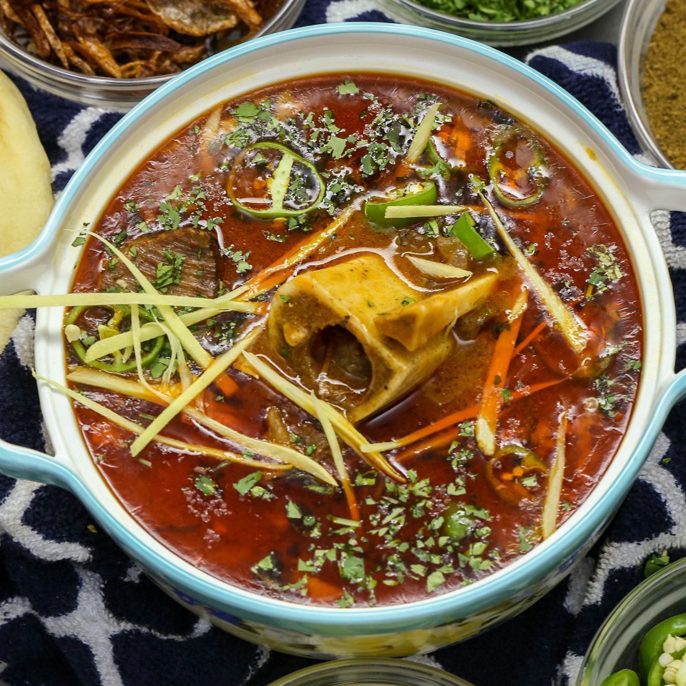

Nihari is a stew originating in Lucknow, the capital of 18th-century Awadh under the Mughal Empire in the Indian subcontinent. It consists of slow-cooked meat, mainly a shank cut of beef, lamb and mutton, or goat meat, as well as chicken and bone marrow. It is flavoured with long pepper, a relative of black pepper.
